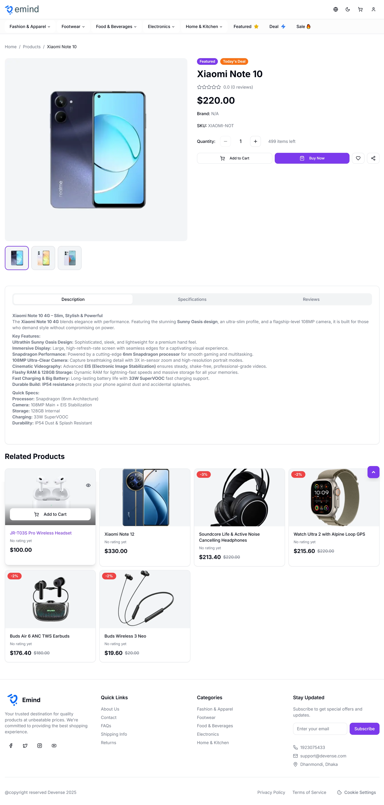
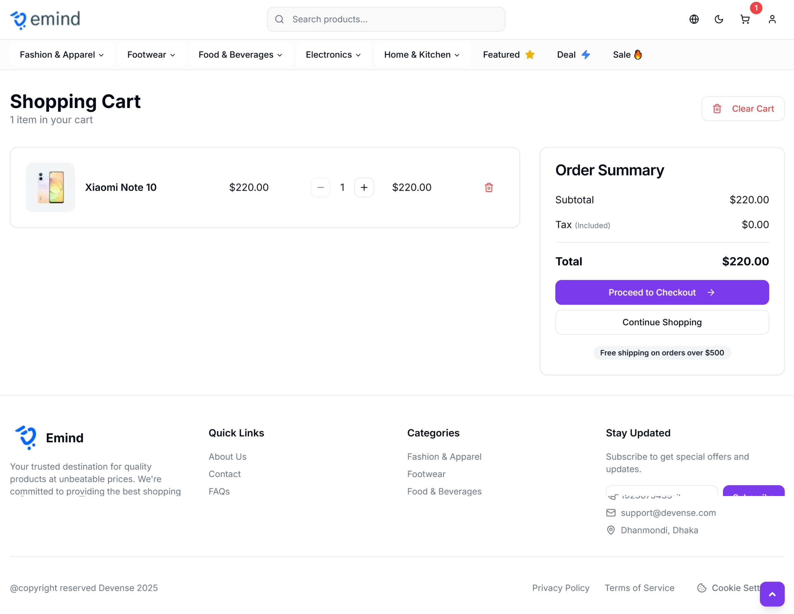
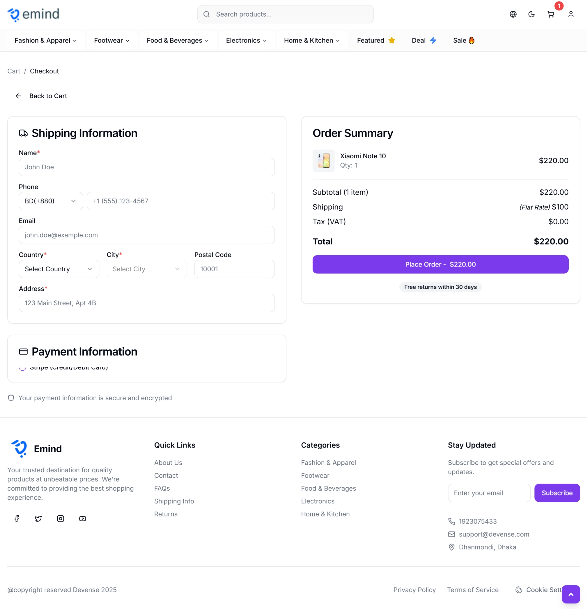
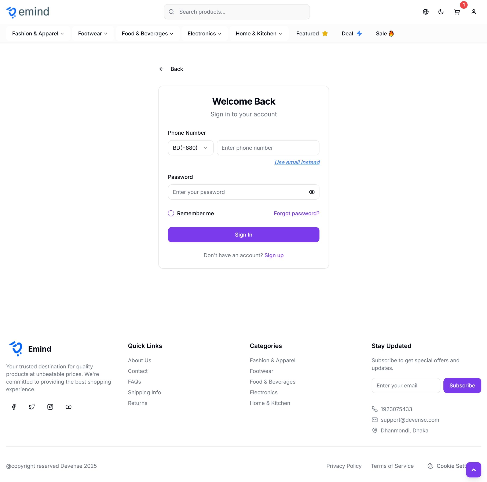
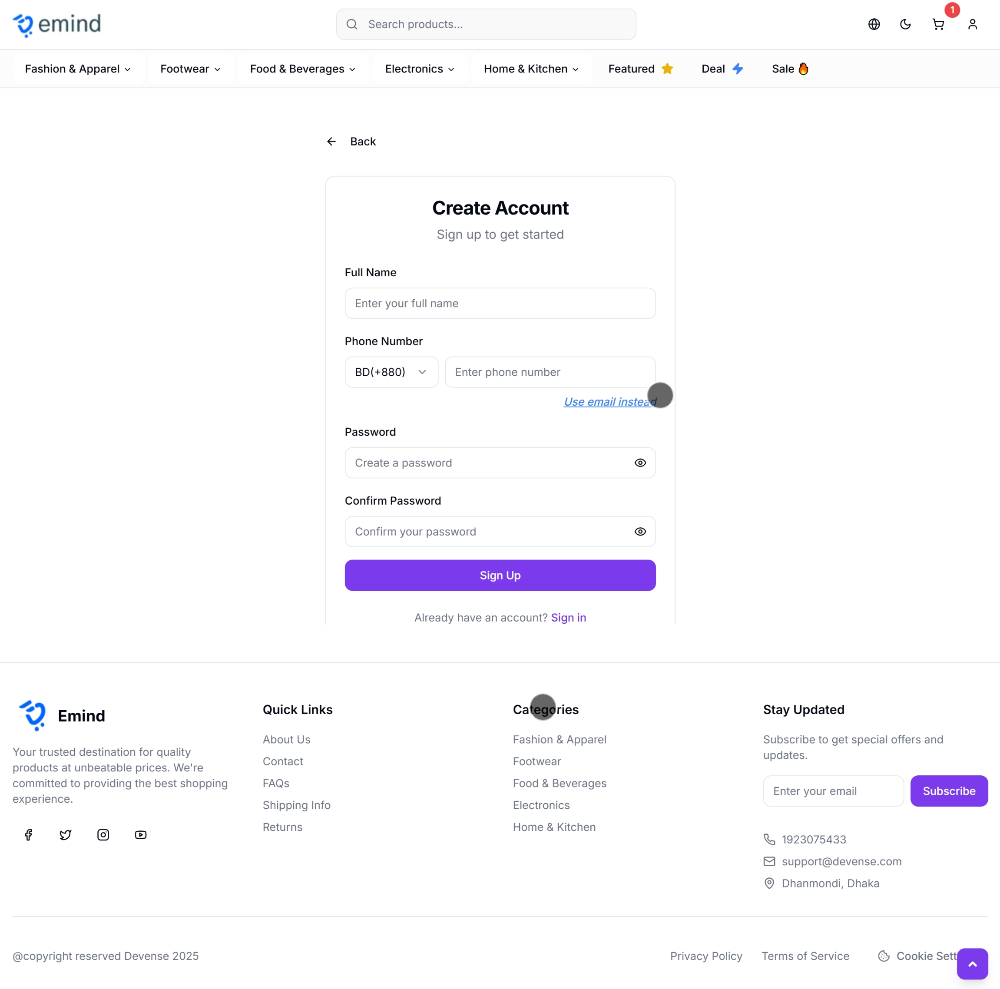
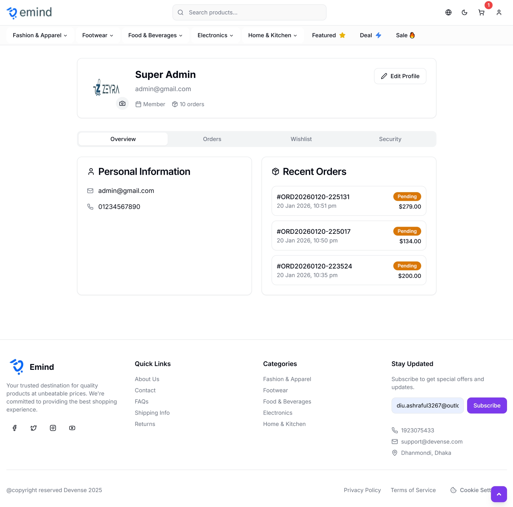
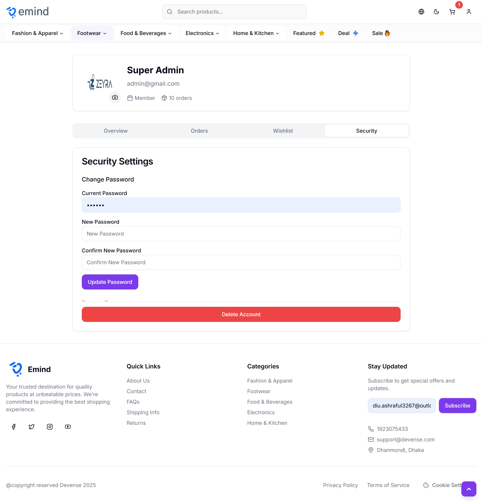
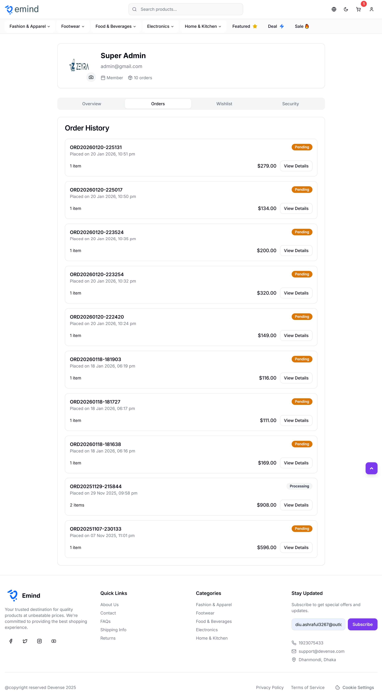
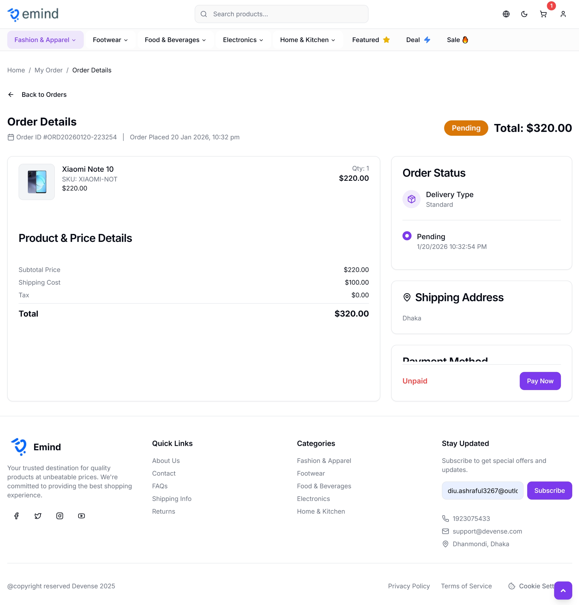
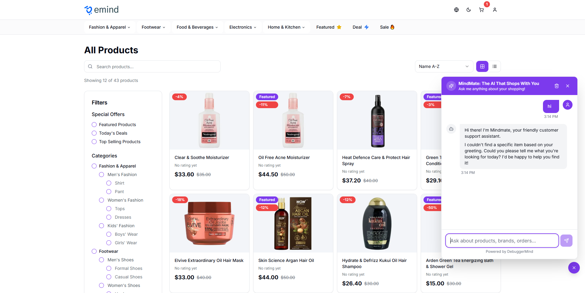

📖 Introduction
Thank you for purchasing DebuggerMind! This documentation will guide you through the installation, configuration, and customization of your new e-commerce platform.
What is DebuggerMind?
DebuggerMind is a modern, full-featured e-commerce application built with the latest web technologies. It provides a complete solution for online stores with support for product catalogs, shopping cart, user authentication, order management, and more.
⚡ Modern Stack
Built with Next.js 15, React 19, and TypeScript for optimal performance and developer experience.
🎨 Beautiful UI
Responsive design with shadcn/ui components and Tailwind CSS. Dark/light mode support included.
🌍 Multi-language
Support for 6 languages including Bengali, English, Spanish, French, Hindi, and Arabic with RTL support.
🔐 Secure
JWT authentication, protected routes, and middleware-based security.
System Requirements
| Requirement | Minimum Version | Recommended |
|---|---|---|
| Node.js | 18.17.0 | 20.x LTS |
| npm | 9.0.0 | 10.x |
| RAM | 2 GB | 4 GB |
| Storage | 500 MB | 1 GB |
⚙️ Installation
Step 1: Extract Files
Extract the downloaded ZIP file to your desired location on your computer.
Step 2: Install Node.js
If you haven't already, download and install Node.js from nodejs.org. We recommend using the LTS (Long Term Support) version.
Verify installation:
node --version
npm --versionStep 3: Install Dependencies
Open a terminal in the project directory and run:
npm installnpm install --legacy-peer-deps
Step 4: Configure Environment Variables
This project uses separate environment files for development and production.
For Development:
cp .env.example .env.localFor Production:
cp .env.example .env.production
Edit the appropriate file (.env.local or
.env.production) and add your configuration:
# API Configuration (Required)
API_BASE_URL=https://your-api-endpoint.com
API_BASE_URL_V1=https://your-api-endpoint.com/api/v1
# Site Configuration (Required for Production)
NEXT_PUBLIC_SITE_URL=http://localhost:3000
# Node Environment
NODE_ENV=development
# Analytics (Optional)
NEXT_PUBLIC_GA_MEASUREMENT_ID=G-XXXXXXXXXX
NEXT_PUBLIC_META_PIXEL_ID=1234567890123456| Variable | Description | Required |
|---|---|---|
API_BASE_URL |
Your backend API base URL | Yes |
API_BASE_URL_V1 |
Your backend API v1 endpoint | Yes |
NEXT_PUBLIC_SITE_URL |
Your site's public URL (for SEO) | Yes (Prod) |
NODE_ENV |
Environment (development/production) | Yes |
NEXT_PUBLIC_GA_MEASUREMENT_ID |
Google Analytics 4 Measurement ID | No |
NEXT_PUBLIC_META_PIXEL_ID |
Meta (Facebook) Pixel ID | No |
Step 5: Run Development Server
Start the development server:
npm run dev
Open your browser and navigate to http://localhost:3000
Step 6: Build for Production
When you're ready to deploy, create a production build:
npm run build
npm start✨ Features
E-commerce Core Features
🛍️ Product Catalog
- Dynamic product listing with server-side rendering
- Advanced filtering (categories, brands, price range)
- Search functionality with debouncing
- Product sorting (price, rating, newest)
- Grid and list view options
- Pagination with customizable items per page
- Product quick view and detailed page
🛒 Shopping Cart
- Add/remove products with quantity management
- Real-time cart calculations (subtotal, tax, shipping)
- Persistent cart using localStorage
- Free shipping threshold (৳1000)
- Cart synchronization across tabs
- Empty cart state with call-to-action
👤 User Authentication
- Login and registration forms
- JWT token-based authentication
- Protected routes with middleware
- User profile management
- Order history tracking
- Automatic token refresh
💳 Checkout Process
- Multi-step checkout flow
- Shipping address management
- Multiple payment method support
- Order review and confirmation
- Order success/failure pages
❤️ Wishlist
- Add products to wishlist
- Persistent wishlist with Jotai
- Move items from wishlist to cart
- Remove items from wishlist
UI/UX Features
🎨 Design System
- Modern, responsive design
- shadcn/ui component library
- Tailwind CSS utility classes
- Dark and light theme support
- Smooth animations and transitions
- Mobile-first responsive layout
🌍 Internationalization
- 6 languages: Bengali, English, Spanish, French, Hindi, Arabic
- RTL (Right-to-Left) support for Arabic
- Easy language switcher in header
- Localized content and UI elements
- Bengali as default language
📱 Progressive Web App
- Web manifest for installability
- Service worker ready
- Offline capabilities (configurable)
- App-like experience on mobile
Developer Features
🔧 Architecture
- Server and Client Components separation
- API service layer with fluent builder pattern
- Type-safe API calls with TypeScript
- Server actions for data mutations
- Middleware for route protection
- Optimized data fetching and caching
📊 State Management
- Jotai for lightweight client state
- React Context for cart management
- localStorage persistence
- Server-side caching (categories, 1-hour TTL)
🔍 SEO Optimization
- Server-side rendering for all pages
- Dynamic meta tags with Bengali support
- Automatic sitemap.xml generation
- Robots.txt for search engines
- Structured data ready
- OpenGraph and Twitter Card meta tags
AI Chat Assistant
- Floating chat widget on all pages
- AI-powered product recommendations
- Order tracking assistance
- FAQ and support
- Conversation history
⚙️ Configuration
Environment Variables
All configuration is done through environment variables. Use
.env.local for development and
.env.production for production builds.
# Required - Backend API Configuration
API_BASE_URL=https://api.yourdomain.com
API_BASE_URL_V1=https://api.yourdomain.com/api/v1
# Required (Production) - Site Configuration
NEXT_PUBLIC_SITE_URL=https://yourdomain.com
# Environment
NODE_ENV=production
# Optional - Analytics
NEXT_PUBLIC_GA_MEASUREMENT_ID=G-XXXXXXXXXX
NEXT_PUBLIC_META_PIXEL_ID=1234567890123456API Configuration
API routes are defined in app/lib/api-route.ts. The
application expects the following endpoints:
| Endpoint | Method | Description |
|---|---|---|
| /products | GET | Get products list with pagination and filters |
| /products/:id | GET | Get single product details |
| /categories | GET | Get all categories |
| /auth/login | POST | User login |
| /auth/register | POST | User registration |
| /orders | POST | Create new order |
| /orders | GET | Get user orders |
| /profile | GET | Get user profile |
app/(app-routes)/*/model.ts files for the expected data
structures.
Theme Configuration
Theme colors can be customized in app/globals.css. The
application uses CSS variables for easy theming:
:root {
--background: 0 0% 100%;
--foreground: 222.2 84% 4.9%;
--primary: 222.2 47.4% 11.2%;
/* ... more variables */
}Language Configuration
Languages are configured in app/i18n/index.ts.
Translation files are located in app/i18n/locales/:
en.json- Englishbn.json- Bengali (Default)es.json- Spanishfr.json- Frenchhi.json- Hindiar.json- Arabic
Adding a New Language
-
Create a new JSON file in
app/i18n/locales/(e.g.,de.json) - Copy content from
en.jsonand translate -
Update
app/i18n/index.tsto include the new language
🚀 Deployment
DebuggerMind can be deployed on various platforms. We provide configuration files for the most popular ones:
Vercel (Recommended)
The easiest deployment option for Next.js applications.
✅ Step 1: Put Your Project on GitHub
If your project is not on GitHub yet:
Inside your project folder:
git init
git add .
git commit -m "Initial commit"
Create a new repo on GitHub → then connect:
git remote add origin https://github.com/yourusername/yourrepo.git
git branch -M main
git push -u origin main
🌐 Step 2: Create Vercel Account
Go to: vercel.com
Sign up using:
- GitHub (recommended)
🔗 Step 3: Import Project into Vercel
- After login → Click "Add New Project"
- Choose "Import Git Repository"
- Select your GitHub repo
- Click Import
Vercel will automatically detect: ✅ Framework: Next.js
No need to set build commands manually.
⚙️ Step 4: Add Environment Variables (VERY IMPORTANT)
Before clicking deploy:
Open Environment Variables section and add:
Name | Value
------------------------------- | ----------------------------------------------------------
API_BASE_URL | https://your-api.com
API_BASE_URL_V1 | https://your-api.com/api/v1
NEXT_PUBLIC_SITE_URL | https://yourdomain.com/
NEXT_PUBLIC_GA_MEASUREMENT_ID | (optional)
NEXT_PUBLIC_META_PIXEL_ID | (optional)
👉 Add them for:
- Production
- Preview
- Development (optional)
- Then click Deploy
⏳ Step 5: Wait for Build
Vercel will run:
npm install
npm run build
After 1–2 minutes 🎉
You’ll get a live URL like:
https://yourproject.vercel.app
Your site is LIVE 🚀
🌍 Step 6: Connect Your Custom Domain
1. Go to your project dashboard in Vercel
2. Click Settings → Domains
3. Add your domain:
yourdomain.com
www.yourdomain.com
Vercel will show DNS records like:
If domain is from Namecheap / GoDaddy etc.
Add this in DNS:
Type | Name | Value
----- | ---- | --------------------
A | @ | 76.76.21.21
CNAME | www | cname.vercel-dns.com
Save DNS → wait 5–15 mins
Back in Vercel → Click Verify
Add this in DNS:
🔒 Step 7: SSL Certificate (Automatic 🎉)
Good news:
👉 Vercel gives FREE SSL automatically
You don’t install anything.
Once domain is connected:
https://yourdomain.com
is secured 🔐
🔄 Step 8: How Updates Work
Whenever you push new code:
Vercel will:
- Auto build
- Auto deploy
- Update your live site
No server restart, no PM2, no Nginx
VPS Deployment (AWS, DigitalOcean, etc.)
For any VPS provider, we provide a comprehensive guide covering Node.js + PM2 + Nginx + Let’s Encrypt SSL.
🧱 Step 0: What You Need Ready
Before touching the server, make sure you have:
- VPS IP address
- VPS username (usually root)
- Your project files (on GitHub or zipped)
- A domain (like yourdomain.com)
🔐 Step 1: Connect to Your VPS
From your computer terminal:
ssh root@YOUR_VPS_IPFirst time? Type yes, then enter the password.
🔄 Step 2: Update Server
apt update && apt upgrade -y
🟢 Step 3: Install Node.js (LTS)
curl -fsSL https://deb.nodesource.com/setup_lts.x | bash -
apt install -y nodejs
Check:
node -v
npm -v
🧰 Step 4: Install PM2 (Keeps App Running Forever)
npm install -g pm2
🌐 Step 5: Install Nginx (Web Server)
apt install nginx -y
systemctl start nginx
systemctl enable nginx
Test in browser:
Go to http://YOUR_VPS_IP → You should see Nginx welcome page
📦 Step 6: Upload Your Project to VPS
📦 Option A (Recommended): Clone from GitHub
apt install git -y
git clone https://github.com/yourusername/yourrepo.git
cd yourrepo
Option B: Upload ZIP via FileZilla/WinSCP and extract
⚙️ Step 7: Setup Project on Server
Inside project folder:
npm install
Create production env file:
cp .env.example .env.production
nano .env.production
Edit values:
API_BASE_URL=https://api.yourdomain.com
API_BASE_URL_V1=https://api.yourdomain.com/api/v1
NEXT_PUBLIC_SITE_URL=https://yourdomain.com
NODE_ENV=production
Save: CTRL + X → Y → Enter
🏗 Step 8: Build the Next.js App
npm run build
🚀 Step 9: Start App with PM2
Next.js runs on port 3000 by default.
pm2 start npm --name "nextjs-app" -- start
pm2 save
pm2 startup
Check status:
pm2 list
Your app is now running in background 🎉
🌍 Step 10: Point Domain to VPS
Go to your domain DNS settings and add:
Wait 5–15 minutes.
🔧 Step 11: Configure Nginx for Your Domain
Create config file:
nano /etc/nginx/sites-available/yourdomain.com
Paste this:
server {
server_name yourdomain.com www.yourdomain.com;
location / {
proxy_pass http://localhost:3000;
proxy_http_version 1.1;
proxy_set_header Upgrade $http_upgrade;
proxy_set_header Connection 'upgrade';
proxy_set_header Host $host;
proxy_cache_bypass $http_upgrade;
}
}
Save & exit.
Enable it:
ln -s /etc/nginx/sites-available/yourdomain.com /etc/nginx/sites-enabled/
nginx -t
systemctl restart nginx
Now your site should work at:
👉 http://yourdomain.com
🔒 Step 12: Install Free SSL (Let’s Encrypt)
Install Certbot:
apt install certbot python3-certbot-nginx -y
Run SSL setup:
certbot --nginx -d yourdomain.com -d www.yourdomain.com
Choose:
- Redirect HTTP → HTTPS → YES
Done! 🎉 Your site is now secure: 👉 https://yourdomain.com
🔁 Step 13: Auto Renew SSL
Let’s Encrypt auto-expires every 90 days. This ensures auto renewal:
systemctl status certbot.timer
If active → you're safe.
🔄 Step 14: When You Update Your Code
cd yourrepo
git pull
npm install
npm run build
pm2 restart nextjs-app
🎨 Customization
Changing Logo and Branding
Site Logo
Replace the logo in the header component:
- Add your logo to
public/logo.png - Update
app/components/layout/Header.tsx
Favicon
Replace favicon files in public/ directory:
favicon.icoapple-touch-icon.pngfavicon-32x32.pngfavicon-16x16.png
Site Metadata
Update site metadata in app/layout.tsx:
export const metadata: Metadata = {
title: "Your Store Name",
description: "Your store description",
// ... more metadata
};Customizing Colors
Edit app/globals.css to change theme colors:
:root {
--primary: 222.2 47.4% 11.2%;
--primary-foreground: 210 40% 98%;
/* Change these HSL values */
}Adding New Pages
Create new pages in the app/ directory following the
App Router structure:
app/
your-page/
page.tsx # Main page component
loading.tsx # Loading state
action.ts # Server actions
model.ts # TypeScript typesCustomizing Components
All components are located in app/components/:
layout/- Header, Footer, Navigationproduct/- Product cards, filterscart/- Cart componentsshared/ui/- shadcn/ui components
npm run build to
check for type errors.
Adding New Features
Adding a New API Endpoint
- Add route to
app/lib/api-route.ts - Create server action using ApiClient
- Define TypeScript types in model file
Adding a New Component
- Create component file in appropriate directory
- Use TypeScript for props and state
- Mark as "use client" if it needs interactivity
- Import and use in your pages
📚 API Reference
ApiClient
Fluent interface for making API calls. Located in
app/lib/api-client.ts.
Basic Usage
import { ApiClient } from "@/lib/api-client";
import { apiRoutes } from "@/lib/api-route";
// GET request
const response = await new ApiClient(apiRoutes.products)
.withMethod("GET")
.withParams({ per_page: 12, page: 1 })
.execute<ProductsResponse>();
// POST request with auth
const response = await new ApiClient(apiRoutes.orders)
.withMethod("POST")
.withBody(orderData)
.withCookieHeaders(cookies())
.execute<OrderResponse>();Methods
| Method | Description | Parameters |
|---|---|---|
withMethod() |
Set HTTP method | "GET" | "POST" | "PUT" | "DELETE" |
withParams() |
Add query parameters | Record<string, any> |
withBody() |
Add request body | any |
withCookieHeaders() |
Add auth cookies | ReadonlyRequestCookies |
execute<T>() |
Execute request | Type parameter for response |
State Management
Jotai Atoms
Located in app/store/:
import { useAtom } from "jotai";
import { miniProfileAtom } from "@/store/mini-profile.atom";
// In component
const [profile, setProfile] = useAtom(miniProfileAtom);Cart Context
import { useCart } from "@/contexts/CartContext";
// In component
const { cart, addToCart, removeFromCart, updateQuantity } = useCart();Hooks
useDebounce
Debounce value changes:
import { useDebounce } from "@/hooks/use-debounce";
const debouncedValue = useDebounce(searchTerm, 500);useMobile
Detect mobile screens:
import { useMobile } from "@/hooks/use-mobile";
const isMobile = useMobile();Server Actions
Located in action.ts files within route directories:
"use server";
export async function getProducts(params: ProductParams) {
const response = await new ApiClient(apiRoutes.products)
.withMethod("GET")
.withParams(params)
.execute<ProductsResponse>();
return response;
}🔧 Troubleshooting
Common Issues
Installation Issues
Solution:
# Delete node_modules and reinstall
rm -rf node_modules package-lock.json
npm installSolution:
npm install --legacy-peer-depsRuntime Issues
Solution:
-
Check your environment file (
.env.localor.env.production) has correctAPI_BASE_URL - Verify backend API is running and accessible
- Check browser console for CORS errors
- Ensure API endpoints match expected format
Solution:
- Check for mismatched HTML between server and client
- Ensure client components are marked with "use client"
- Avoid using browser APIs in Server Components
Solution:
- Check if backend returns valid JWT token
- Verify cookie name matches
auth.config.ts - Check middleware.ts for route protection settings
- Clear browser cookies and try logging in again
Build Issues
Solution:
- Run
npm run lintto see all errors - Fix type errors in your code
- Ensure all imports are correct
- Check
tsconfig.jsonconfiguration
Solution:
- Check environment variables are set in production
- Verify
next.config.jsis correct - Check browser console for errors
- Ensure all API endpoints are accessible from production
Performance Optimization
Slow Page Loads
- Enable image optimization in
next.config.js - Use
loading.tsxfiles for better UX - Implement pagination for large data sets
- Use Next.js Image component for all images
Large Bundle Size
- Enable tree-shaking by importing only what you need
- Use dynamic imports for large components
- Run
npm run buildto see bundle analysis
Getting Help
If you're still experiencing issues:
- Check Documentation: Re-read this documentation carefully
- Browser Console: Check for error messages
- Server Logs: Check terminal output for server errors
- Network Tab: Inspect API calls in browser DevTools
- Contact Support: Reach out through Envato Market support
- Error message (full text)
- Steps to reproduce
- Browser and OS version
- Node.js version
- Screenshots if applicable
FAQ
Can I use this with a different backend?
Yes, as long as your backend API follows the expected response format. You may need to adjust the TypeScript models.
Is the source code included?
Yes, all source code is included and can be modified.
Can I remove the language support?
Yes, you can remove languages by editing
app/i18n/index.ts and deleting unused locale files.
How do I update to a newer version?
Check the changelog for breaking changes, then update dependencies
with npm update.
Can I use this for commercial projects?
Yes, the Regular License allows use in commercial projects. See LICENSE.txt for details.
📸 Screenshots
Below are screenshots of the main features and pages of the DebuggerMind e-commerce application. Each screenshot demonstrates a specific functionality or page of the application.
🏠 Home Page

Usage: This is the main homepage of the application that welcomes users. This page displays featured products, categories, special offers, and other important information. It creates the first impression for users and serves as the main navigation point.
🔍 Category and Search Page

Usage: On this page, users can browse different categories and use the search function to find specific products. Category filters, price range, and other filter options are available here.
📦 Product Details Page
Usage: This page displays detailed information about a specific product such as product images, description, price, rating, reviews, and stock status. Users can add products to cart or save to wishlist from here.
🛒 Shopping Cart
Usage: On the shopping cart page, users can view their selected products, change quantities, remove products, and see the total price. From this page, users can proceed to the checkout process.
🚚 Shipping and Payment Information
Usage: On this page of the checkout process, users can enter their shipping address, contact information, and select payment method. It collects necessary information before completing the order.
🔐 Sign In Page
Usage: On this page, registered users can log in with their email and password. After successful login, users can access their profile, order history, and other protected features.
📝 Sign Up Page
Usage: New users can create a new account on this page by providing their personal information (name, email, password, etc.). After completing registration, they can use all features of the application.
👤 User Profile Overview
Usage: On this page, users can view and edit their profile information. Personal information, contact addresses, and account settings are displayed here.
🔒 User Security Settings
Usage: On this page, users can manage their account security settings such as changing password, two-factor authentication, and other security options.
📋 User Order History
Usage: On this page, users can view a list of all their previous orders. Each order's date, status, total price, and other information are displayed here.
📄 Order Details Page
Usage: On this page, users can view detailed information about a specific order such as ordered products, shipping address, payment information, tracking number, and order status.
💬 AI Chat Assistant
Usage: The AI Chat Assistant is a floating chat widget that appears on all pages of the application. This intelligent feature provides real-time assistance to users, helping them with product recommendations, order tracking, FAQ answers, and general support. Users can interact with the AI assistant through a conversational interface to get instant help without leaving the current page.
Key Features:
- Product Recommendations: The AI can suggest products based on user queries and preferences, helping users discover items they might be interested in.
- Order Tracking: Users can ask about their order status and get real-time updates on shipping and delivery information.
- FAQ Support: The assistant can answer common questions about products, shipping policies, returns, and other frequently asked questions.
- Conversation History: The chat maintains conversation history, allowing users to refer back to previous interactions.
- Always Available: The chat widget is accessible from any page, providing constant support throughout the shopping experience.
Technical Implementation: The AI Chat Assistant is integrated as a floating component that can be toggled open or closed. It uses modern AI technology to understand user queries and provide contextual responses. The chat interface is designed to be non-intrusive while remaining easily accessible when needed.